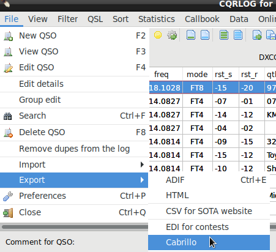

|
WARNING!
Backup your data often! BACKUP your log directory at the end of EVERY session!
All that you need to backup and store in a safe place is the log database directory
located in the ~/.config/cqrlog/database folder, or you can enable the autobackup function
in Preferences. This autobackup function creates an ADIF file with a backup of your log.
|
CQRLOG for LINUX by OK7AN & OK1RR

Filtering
CQRLOG offers a wide variety of filtering options allowing you to select and export records
(for awards etc.) in ADIF or HTML formats.
To get clean start use button Clear Filter before setting your filter values.
If Remember filter checkbox is checked filter remembers last settings (saved in ~/.config/cqrlog/FilterSettings.fil)
, so there is no need to create filter every time from beginning
after opened again from Qso list/Filter.
Only filters that you plan to need later in future needs to be saved by Save filter button.
Immediate press of OK after button Clear Filter is pressed removes all previous filtering if Remember filter checkbox is checked.

Most of the fields have an option to select records based on an exact match or on a substring
contained in the selected field, i.e. if you want to select all WA3 stations, put WA3 into
the Callsign box and click the Include radio button. Note, please, that if you select
contacts with members of a particular club or from your own database, you should choose
the time span (date from-to) to make the Membership option active.
Selecting Band from bandselector will preset Freq from: and Freq to: as band start and end frequencies (Defined in Preferences/Bands/Frequencies).
Once filter values are selected you can make them reversed by checking chekbox Reverse filter (NOT). I.E. making filter like mode FT8
will show all FT8 qsos, but if you check Reverse filter (NOT) it shows all other mode qsos, but not FT8 ones.
Pressing calendar icon is easy way to set date. Double click on selected date closes calendar and sets the date. Pressing ESC closes calendar, but does not set date. Date can also be typed in manually.

The sorting order can be selected from the following options:<

Selected records can be grouped by the following criteria:

Once your filter is set up, go to the upper menu (item 'File' in QSO list) and choose
'Export'.

Choose 'ADIF' or 'HTML'. The usual File Save dialog appears (depending on the desktop
used). Choose a location and file name.